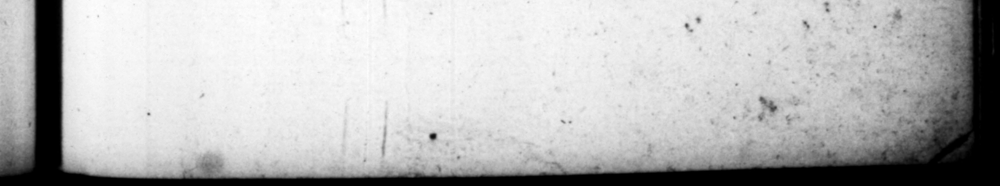

r ˙ , r « vp ] ê 'i -E NERO CLAUPIUS CESAR 2 eidiſſet, comitiali morbo ex ; conluetudine correptum apud convivas ementitus, poſtero die raptim inter mazgimos imbres tranſlatitio extulit funere. Locuſtæ pro navata o pera, impunitatem prediaque. ampla, fed & dedit. iſciputos — it was only a — with Mm. ÞAnd be fa = inmmediately at the forff 11 of it, pretending te the company, that 2 of th: falling ſickneſs which he had bien uſed to be troubled with, he buried him che day: following, in a very pow manner, ande vaſt burry, daring # Very rainy ſeaſon. ave Licuſts dm, with g vaſt 2 in land, and put Jome diſciples to her forthe learning of her trade. 34. Matrem dicta ſactaque ſua exquirentem acerbius & corrigentem, hactenus pri mo ravabatur, nt invidia identidem oneraret, quaſi ceſſurus imperio, Rhodumque abiturus : mox & honore omni & pote ſtate privavit ; abductaue militum & Germanorum tione, con tubernio quoque ac palatio expulit. Neque in divexanda quidquam penſi habuit: ſubmiſſis & qui Romz morantem, litibus, & in ſeceſſu quieſcentem, per convitia & jccos, terra marique tervelientes inquiĩetarent. erum minis ejus a© violentia territus ſtatuĩt. Et cum venene ter tent aſſet, — antidotis premunitam, lacunaria, que noctu ſuper dormientem laxata machina deciderent , paravit. Hoc conſilio ou conſcios parum celato, ſolutilem navem , cujus vel naufragio vel camerz . ruina periret , commentus eſt," Atque ita reconciliatione fimulata, jucundiſſimis litteris Bajas evocavit ad ſollennia Quinquatum ſimul — daue negotio trierarchis, qui n qua — Rat, velut fortuĩto concurſu confringerent, protraxit convivium. Repetentique Baulos, in locum c i navl11, machinoſum illud obruir, hilare proſecutus: atque in 2 papillas quoque exolcula tus, reliquum tempo34. His mother was uſed to enguire very ſtrictiy into ev:ry thing he ſaid er dia, and to reprimand bum ver freely, which gave him ſo much difturbance, that he endeavoured 10 Ts ber to — 3 F the nobel, | equently pretending to quit the gern 4 and retire to Rhodes, and ſoon after deprivcd her of all howur and power, ani takinz from ber, her guard of Reman and G:rman ſoldiers, he har iſhed her the palace, plagued and tormented her by all the way he could think of, employing perſons to perſecute her when at Rome wi'h lau- ſuits, and to 4. turb her in her retirements from town with foul language and banter as they pa either by land or ſes But being terrified with her threats and wvinlent ſpirit, he r:ſelved upon her deftrutiion, and vhrice nttemp;ing it by poiſon, out finding her ſecured beforehand by antide'es, be provided a contrivante to let looſe the fl or abu her bed-chamber, ug on her as Mas. 4ſteep in the 73 But this d ſigu being not kept cloſe enough: by theſe encerned. in it, he contrived a ſhip that would enfely fall a pieces, in hopes of adeftreying: her either by the diſſalgtion of it, or the falling in of the cabin upon her, Accordingly wnden tht. cwer of 4 pretended reconcilia:ig:, be wrices ber a mighty croil liter, inwiting her to Bie, to celebrate. thire toget ber with bin ſelf the. feſtival of Minerva. and having giyen private orders to the captains of the trireme: that were to a:tind. her, to *ſhait. her ſbip to 4 2 by falling foul au it, but m ſuch a mamer a: t maks "the thing appear accidental an, be weld the entertainment 5" "the . better canvenionee of dmg it in the Mm 2 | $4 1507 0 0 Tis, for ber ſeruice, 4. par,
